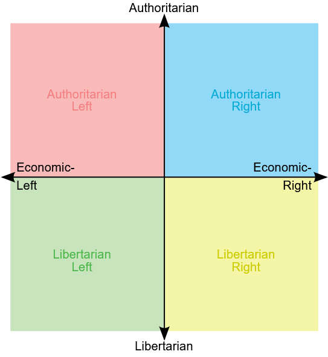
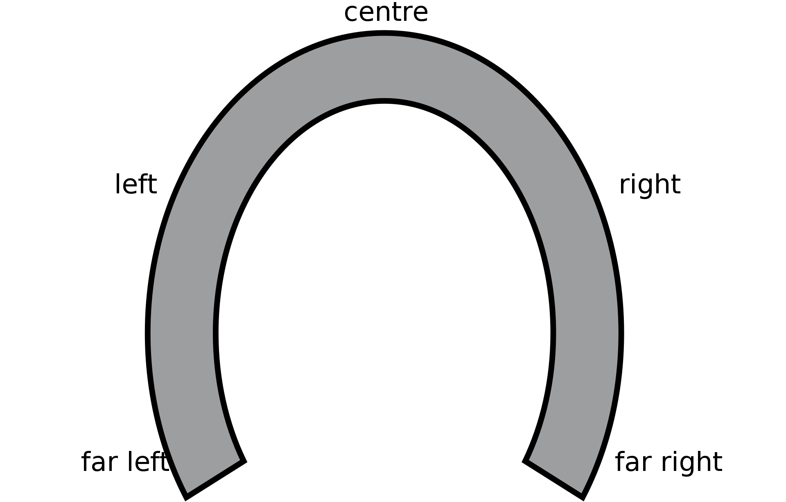
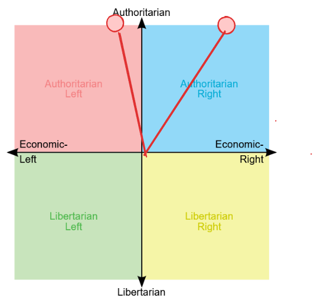
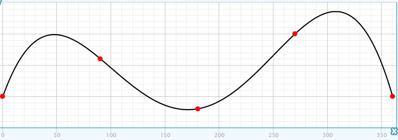
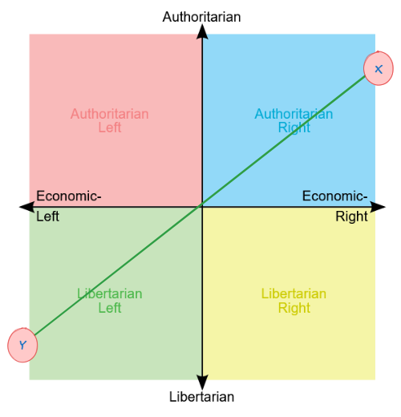
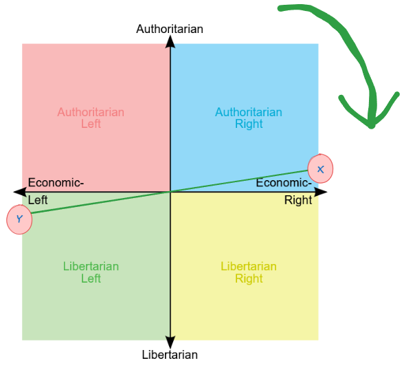
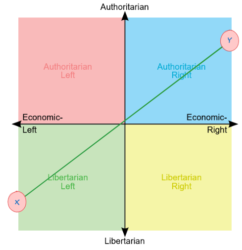
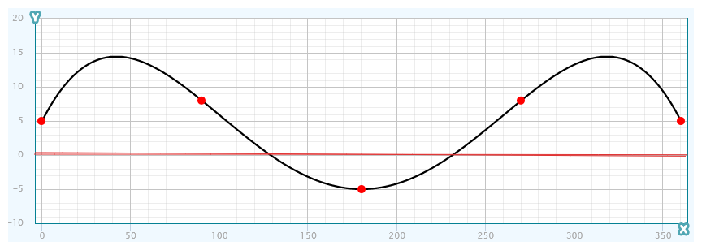

Analyzing the political compass with algebraic topology
In political theory there is a model, “political compass”, that places political views along two axes: left-right, and authoritarian-libertarian.

And there is a contentious idea, “horseshoe theory”, which says that two extremes on the compass are essentially the same, or, at least, they are equally bad.

The idea is criticized by everyone who knows about it, and overall it is considered more of a dumb meme than a real theory. But it's correct, and I will now prove it.
We are trying to prove that the positions on the opposite sides of the compass are equal in… different people call it different things, but it doesn't matter for the purposes of the proof, so I'll just call it “cringeness”. Either the cringeness of the views normatively associated with the position, or the average cringiness of its proponents.
Normally, the positions on the compass are represented as a tuple (X,Y) for horizontal and vertical coordinates, but since we are only interested in the positions on the very edge, we can do with one number – the azimuth. The direction upwards is 0 degrees, and clockwise is positive.
So, on this graph, for example, the point in the blue quadrant will have the coordinate of about 30 degrees (slight deviation), and the point in the red quadrant will be about 350 degrees (going almost the entire round trip):

We also assume that cringiness depends on position in a continuous way – nearby points are approximately equally cringey; it's not possible to change you opinion by a millionth of a degree and move from maximum cringe to maximum based.
Then the graph of cringiness as a function of degree can be drawn on a flat graph, with azimuth on the horizontal line and cringiness on the vertical one, something like this:

Notice that the point at 0 and the point at 360 have the same cringiness – because it's the same position. The graph closes on itself – this is important. Just like your cringiness can't change radically when going from 30 to 30.00002, it can't change radically from 359.99999 to 0.000001. After all, we picked an arbitrary direction as our zero.
Let's take any two opposite points, X and Y:

What's cringiness of X minus cringiness of Y? If it's zero, then those are the two opposite points on the compass that are equally cringy, the theory is proven. Let's suppose they're not equal, and either positive (X is cringier than Y), or negative (Y is cringier than X).
Let's rotate our pair of points around the axis:

The difference between cringinesses can likewise be graphed, and it also looks like a continuous line, and after going around the entire 360 degrees, it returns to the same place – so, the difference between the cringinesses looks generally the same as the graph of the cringiness of one point.
But what happens halfway, when we rotate our pair of points by 180 degrees?

Relative to where we started, X took the place of Y, and Y took the place of X – they swapped cringinesses. So if X was cringier than Y to begin with, now it's less cringy. If the difference was positive, now it's negative, and vice versa.
In other words, if we graph the difference between cringinesses on the graph, it will start out positive, then be negative, then positive again (or vice versa).

As you can see, if the graph is one continuous line, and it's sometimes positive and sometimes negative, there must be a point where it's zero. It's called “Intermediate value theorem”, but you can probably see it just fine – if you move from negative to positive in a continuous path, you will be at zero at some point.
So, as we rotate our pair of points, somewhere along the way there will be an angle at which the difference between cringinesses is zero. Those would be our two opposite, but equally cringy positions of the compass.
Of course, we don't know the exact shape of the graph and we can't say at what exact angle that happens. Maybe far-left is the same as far-right, or maybe top is the same as bottom, or maybe something else. But there will always be an axis relative to which the horseshoe theory is correct.
Notice that for our “cringiness” we can take any sufficiently continuous variable. There are two opposite points that have the same affinity for the free market – probably the bottom-left and top-right. There are two opposite points that give you the same quality of life. Two opposite points that are equally religious. That equally support LGBT rights. The proponents of which are the same average height. That are equally valid according to Danny DeVito. If course, those are different sets of points, but in every case there is some place where the compass bends into a horseshoe.
Ah, topology!
 Reply by email
Reply by email Leave anonymous comment
Leave anonymous comment